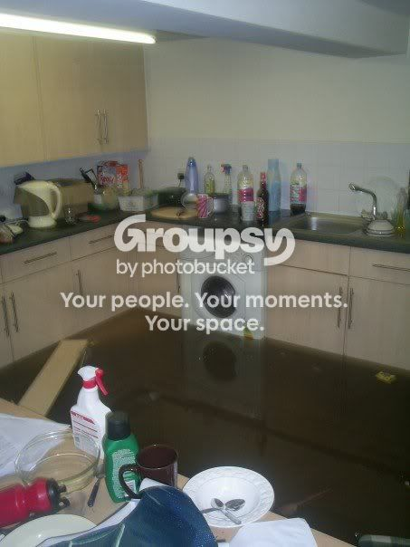
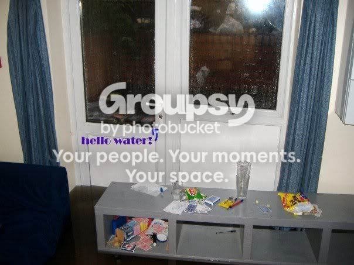

#15936 1 2007-06-27T19:41:59Z 00tinytim00 It's a bit damp here in Sheffield at the moment. For those who don't know, Sheffield's a British city set in a valley between seven hills, into which five different rivers flow. This, understandably, makes for frequent flooding.
Recently, Sheffield's been hit by a series of torrential downpours. I don't think it's too much of an overstatement to say that it's a bit like the rainforest, but with less trees. Consequently, half of Sheffield's underwater.
The local newspaper is going mad. There've been two or three deaths, one of which was that of a thirteen-year-old, and many made homeless. There's been millions of pounds of damage, and a lot of Sheffield is on complete shutdown. So the newspaper's devoting sufficient pages to the event - an eighteen-page spread yesterday and ten additional pages today. (Inidentally, this is seventeen pages and one day more than it gave to September 11th.) It never fails to amaze me, how the paper keeps feeling the utmost astonishment at any flooding in Sheffield, despite it being practically one big floodplain.
This isn't affecting me much because I live on top of a hill, so if the floods reach us they'll have wiped out most of the city. I'm angry at the rain at the moment, anyway, because it's throwing my plans for tomorrow into disarray. Yesterday, my friend called to see if I would like to go bowling with him and others. I agreed, because it was something to do other than vegetate now that I have absolutely nothing to do. However, the only route from me to Place of Bowling is straight through the city centre, which, given the rain and flooding, is probably sinking Atlantis-style as I type. So I'll just have to hope. *anticlimax*
All of this ranting, other than being a blatant attempt at garnering sympathy from complete strangers with no reason to give a damn, is just a round-about way of saying: How's your weather been lately? Incredibly boring? Unusally exciting? Hilariously lethal? Do tell.
(I was going to put this in Off-Topic, but I suspect it would have been moved here anyway. I did a Search and found a weather topic in this sub-forum, but the "preview post" links are broken and I can't find it in the five-page list of topics in this sub-forum, suggesting that it's just a figment of my imagination.)
#336366 2 2007-06-27T19:55:55Z Thomas I live in Windsor, Ontario, Canada, pretty much at the Southernmost tip of Canada. It gets really bad in the summer, when there are lots of thunderstorms. Just now, there is a horrible thunderstorm going on, even worse than usual. Luckily, we don't get many tornadoes around here, but it happens. I'm lucky there isn't much bad going on right now. I feel bad about what's happening in your area.

#336367 3 2007-06-27T19:56:39Z dejablue North Alabama's been ridiculously dry. In the past 6 weeks, it's rained once. And that was for 10 minutes. Ridiculously dry. Unlike you, I would like a little bit of rain, heh.
#336370 4 2007-06-27T20:14:17Z Ad The BBC are going mad for those floods.
Glad to hear you've not been effected.
Living on a hill. *high fives*
Not that I'm near a river anyhoo.
Bets on another hosepipe ban this Summer?

It's been ridiculously dry until now...
It wouldn't surprise me, Gordon Brown came into power today...
Britain fails today.
#336371 5 2007-06-27T20:22:30Z kamikaze3000 Hehe, I saw a picture of Hillsbrough. Classic!
#336411 6 2007-06-27T22:04:35Z Luminaflare Britain fails today.
We failed when Tony Blaire came in to power.
Also i live in Stocksbridge which is at the edge of Sheffield
#336412 7 2007-06-27T22:06:49Z Django Western New York is hot and humid. Sort of good, sort of bad.
#336475 8 2007-06-28T01:50:18Z Skyline Connecticut is hot, and very humid, even right now in the middle of the night. There's some distant thunder as well.
#336479 9 2007-06-28T02:15:20Z Twistkill Here in Richmond Hill, Ontario, it's getting close to unbearable for me. It was approximately 32 today with high humidity and it was muggy later in the day. We had some rain 2 days ago as well as some last week, but it's still extremely hot.
#336488 10 2007-06-28T02:53:45Z Tsukatu California. Too much sun.
Wanna buy some sun? We have enough of it going around.
#336503 11 2007-06-28T03:33:35Z Topolord NYC was hot and humid today, and then switched rather dramatically to serious thunderstorms. And there was a localized black-out over my neighborhood. a 1-and-1/2 hour blackout over sixty blocks and it's "a crisis." Big cities... >_>
plus we never get enough snow for snow days.
Connecticut is hot, and very humid, even right now in the middle of the night. There's some distant thunder as well.
probably the same storm. if it's heading up the coast then watch out.
#336566 12 2007-06-28T10:00:19Z Pembie Dry, however we have been getting some rain, just not enough.
So dry that this was our main dam about 5 years ago:

Today:
http://www.qwc.qld.gov.au/myimages/qwc/Mid...%2006%20109.jpg
(that should all be water except the trees)
#336576 14 2007-06-28T11:41:05Z smort Here in Canadia, we have an unbearable heat wave. Our polar bears are melting!
It must be at LEAST -5 Celsius. That's 23 Fahrenheit for you imperialists.
#336588 15 2007-06-28T12:34:23Z seven_two What's wrong with the weather these days? It's either raining for days, or it's really hot out there. I live in Singapore.
#336610 16 2007-06-28T15:34:44Z 7! It has been so hot lately. Yesterday was in the 90's and this morning was horribly muggy. Last night it was thundering. I went outside and took this picture.

#336647 17 2007-06-28T20:06:02Z iangb This is how my kitchen reacted to the rain.

This is me in the rain (we though the outside drain had blocked, so I was trying to fix it).
Inside... and out

Goddamnit.
#336653 18 2007-06-28T20:17:35Z 00tinytim00 Ah. Bad, then?
Sorry to see that.
I hope it didn't cause as much damage as it looks like. I'd suggest opening the door, but that might make things worse.
By the way, I found out recently that we're inadvertantly damaging the house at the bottom of the hill. It seems the rainwater runs of our back garden and flows into our next-door neighbours' garden lower down the hill, where, due to the shape of their garden, the water gets pressurised into a raging river and carves a swathe of destruction through the rest of the gardens, flooding the houses at the bottom.
Oops.
#336668 19 2007-06-28T20:35:32Z smartalco ^lol
its been hot in kansas, although not quite as much as usual, and we actually have had more rain then average this year (hasn't happened for about a decade, we are ahead like 6" on the year right now)
#336698 20 2007-06-28T21:49:26Z Spawn of Yanni We almost touched 50 Celcius here, I think. It's bound to get hotter still, too. Woo for the desert!
#336709 21 2007-06-28T22:09:04Z Ad Sorry to hear that, Ian.
That kitchen looks pretty new too...
Tough break.
#336809 22 2007-06-29T02:21:18Z Atilla My state is currently undergoing drought and floods at the same time. Yes, in the same areas. We had a downpour which flooded several towns, but we've had so little rain that the total rainfall for the month is still below average. As if that wasn't enough, the rain added a lousy 0.1% to Melbourne's dams, and it looks like Melbourne will be moving to heavier water restrictions next month. It's really quite ironic.
#336820 23 2007-06-29T02:46:30Z Mosh I live in Sacramento, California, USA.
...It's too damn sunny, just as Tsukatu said.
We'll gladly sell you ... give you ... pay you to take some of the sun, in exchance for a little rain.
#336994 24 2007-06-29T18:29:35Z Mysterypea Let's see...
rain
rain
rain. And
oh yeah!
rain
and thunderstorms
But now it' perfect weather
#337042 25 2007-06-29T21:48:19Z Skyline It must be at LEAST -5 Celsius. That's 23 Fahrenheit for you imperialists.
O_o
Where do you live? Yukon Territory? 23 degrees
in the middle of June?#337182 27 2007-06-30T03:00:38Z Thomas Let's see...
rain
rain
rain. And
oh yeah!
rain
and thunderstorms
But now it' perfect weather
Where do you live? I think we might live close to each other!
I could know a victim person to rape kidnap talk to!
#337368 29 2007-07-01T01:33:56Z Thomas Here in Canadia, we have an unbearable heat wave. Our polar bears are melting!
It must be at LEAST -5 Celsius. That's 23 Fahrenheit for you imperialists.
LOL!
I think he's joking guys. It's actually pretty warm in the summer (At least where I live). It gets up to about 35 C, around 95 F.
#337429 30 2007-07-01T09:17:29Z Chase *coughs*Whee weather*coughs*
I've got a cold now, in the middle of June

+ more Rain
#337430 31 2007-07-01T09:24:27Z George I love rain!!
Not really, we just need it for the drought.
 .
.